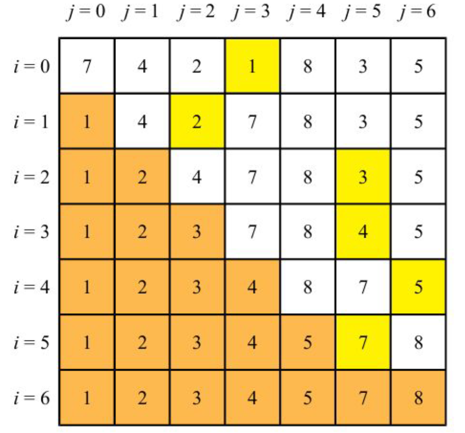
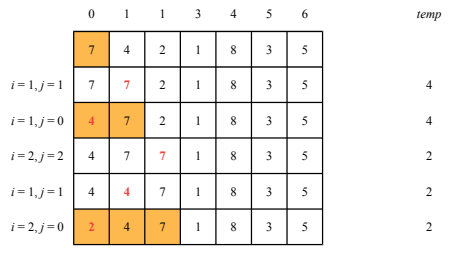
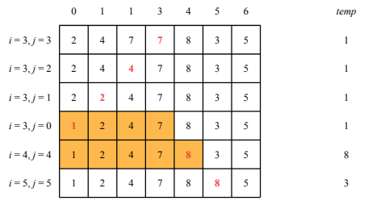
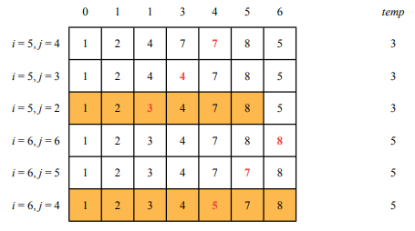
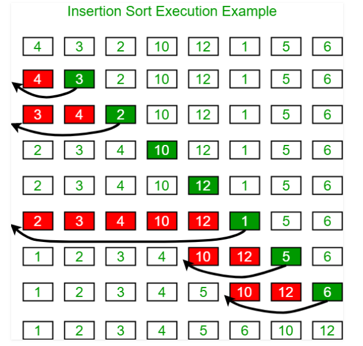
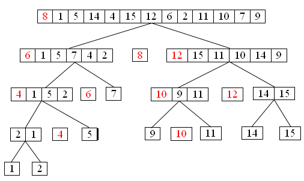

Module 2, Practical 5¶
In this practical we will work with sorting algorithms.
Sorting algorithms¶
Several sorting algorithms exist, the first one we will work with is selection sort.
Selection sort¶
Selection sort is the simplest of the sorting algorithms.
The idea of selection sort is that given \(U=u_{1},u_{2},...,u_{n}\) the algorithm loops through all the elements of \(U\), finds the minimum \(u_m\) and places it at the beginning of the sequence \(U\), swapping \(u_{1}\) with \(u_m\). At the next iteration, the algorithm continues looking for the minimum starting from \(u_2\) and so on.
If \(U\) has \(n\) elements, we need to perform the following two steps for each position \(i=0,..,n-1\) in the list:
(argmin) Find index of the minimum element in the sublist \(U[i:]\), let’s call it \(min\) (i.e. \(u_{min} = min(U[i:])\));
(swap) Swap \(u_{min}\) with \(u_i\);
A reminder on how selection sort works is shown in this picture taken from the lecture slides. Yellow cells are the minimum found at each iteration, while orange cells are those already sorted by previous iterations.
A good implementation of this sorting algorithm has complexity \(O(n^2)\), where \(n\) is the number of elements in the list to sort.
A base class for sorting algorithms¶
Implement a base class, SortingAlgorithm, that has the following attributes:
data(the actual data to sort)operations(initialized to 0) that counts how many swaps have been done to perform the sortingcomparisons(initialized to 0) that counts how many comparisons have been doneverbosea boolean (default= True) that is used to decide if the method should report what is happening at each step and some stats or not.
The class has one method, sort, that implements the sort algorithm (empty for the base class)
[ ]:
class SortingAlgorithm:
def __init__(self, data, verbose = True):
self.data = data
self.comparisons = 0
self.operations = 0
self.verbose = verbose
def getData(self):
return self.data
def getOperations(self):
return self.operations
def getComparisons(self):
return self.comparisons
def sort(self):
raise NotImplementedError
sa = SortingAlgorithm([])
print(sa)
sa.sort()
Please, note that the method sort raises an exception NotImplementedError. Exceptions are used to detect and manage errors occurred during execution. Exceptions can be raised thorough the instruction raise and they can be captured by the construct try:
[ ]:
import sys
try:
f = open('myfile.txt')
s = f.readline()
i = int(s.strip())
except OSError as err:
# code executed if an exception OSError is raised during the execution of the code in the try instruction block
print("OS error: {0}".format(err))
except ValueError:
# exception ValueError
print("Could not convert data to an integer.")
except:
# general exception
print("Unexpected error:", sys.exc_info()[0])
raise
else:
# optional, collects code that has to be executed ONLY if no exceptions are raised
f.close()
In our praticals we will not use extensively Python exceptions. For a detailed explanation on how to manage errors and exceptions in Python, we refer to the official language tutorial https://docs.python.org/3/tutorial/errors.html.
Exercise (implementation)¶
Implement a class SelectionSort that inherits from the base class, with the following attributes:
data(the actual data to sort)operations(initialized to 0) that counts how many swaps have been done to perform the sortingcomparisons(initialized to 0) that counts how many comparisons have been doneverbosea boolean (default= True) that is used to decide if the method should report what is happening at each step and some stats or not.
The class implements the sort method, sort, that implements the selection sort algorithm (two more private methods might be needed to compute swap and argmin – see description above).
Once you implemented the class, test it with some data like:
[7, 5, 10, -11 ,3, -4, 99, 1]
Show/Hide Implementation
Insertion sort¶
The algorithm builds a sorted list step by step. At each iteration it removes one element from the list, placing it in the correct position within the growing sorted list.
Given an unsorted list \(U = u_0, u_1, ..., u_n\):
For each \(i\) from 1 to \(l = length(list)\):
get \(u_i\) and store it in a temporary variable \(temp\);
for \(j = i\),…,0 push \(u_{j-1}\) to position \(j\) until \(temp\) > \(u_{j-1}\). If \(j\) exists such that \(temp\) < \(u_j\), place \(temp\) at position \(j\), otherwise place \(temp\) in position \(0\).
A graphical representation of the algorithm (from the lecture slides) follows:
  
The worst case complexity of this algorithm is \(O(n^2)\), with \(n\) being the number of elements in the list. If one element is no more than \(k\) places away from its place in the sorted array, the real complexity goes to \(O(kn)\). The cost of the algorithm is therefore dependent on the sorting of the input list.
Another graphical representation of the algorithm follows (from geeksforgeeks.org). At each iteration, red boxes are pushed to the right to make room for the green element.
Exercise (implementation)¶
Implement a class
InsertionSortthat inherits from the base class and has the following attributes:
data(the actual data to sort)operations(initialized to 0) that counts how many swaps (movements of data to the left) have been done to perform the sortingcomparisons(initialized to 0) that counts how many comparisons have been doneverbose, a boolean (default= True) used to decide if the method should report what is happening at each step and some stats or not
The class should implement the sort method.
Show/Hide Implementation
Merge sort and Quick sort¶
These are divide et impera algorithms (latin, divide and conquer in English) and they work by:
dividing the original problem in smaller problems (based on parameters such as the size of the input list);
recursively solving the smaller problems (splitting them until the minimum unit – the base case – is reached and solved);
combining the partial results in the final solution.
Merge sort¶
The idea of merge sort is that given an unsorted list \(U=u_{1},u_{2},...,u_{n}\) the \(MergeSort\) procedure:
breaks the list \(U\) in two similarly sized lists (if the size is odd, the first list is always one element bigger than the other);
calls \(MergeSort\) recursively on the two sublists, until we have sublists of one element only, which are ordered by definition;
merges the two already sorted sublists in a sorted list.
The algorithm makes use of three methods:
(
merge): gets two sorted lists and produces a sorted list that contains all the elements of the two lists. This method builds the return list by getting the minimum element of the two lists, “removing” it from the corresponding list and appending it to the list with the result. “removal” can be done by using two indexes pointing to the smallest elements of each of the two (sub)lists and incrementing the index of the minimum of the two (i.e. the element that is also copied to the result list);(
recursiveMergeSort): gets an unordered (sub)list, the index of the beginning of the list, and the index of the end of the list. It recursively splits it in two halves until it reaches lists with length \(0\) or \(1\) - at that point it starts merging pairs of sorted lists to build the result;(
mergeSort) gets a list and applies the recursiveMergeSort method to it starting from position \(0\) to \(len - 1\).
A reminder on how merge sort works is shown here (from the lecture slides). The first part is the splitting of the initial list into smaller lists, until the base level is reached with recursiveMergeSort.
This second picture shows how the sorted list can be reconstructed by applying the merge method to pairs of sorted lists.
A good implementation of this sorting algorithm has complexity \(O(n log (n))\) where \(n\) is the number of elements in the list to sort.
Exercise (Implementation)¶
Implement a class
MergeSortthat inherits from the base class and has the following attributes:
data(the actual data to sort)operations(initialized to 0) that counts how many recursive calls have been done to perform the sortingcomparisons(initialized to 0) that counts how many comparisons have been donetimeattribute that keeps track of the elapsed time (hint: use the Pythontimemodule)verbosea boolean (default= True) that is used to decide if the method should report what is happening at each step and some stats or not.
The class implements the sort method that implements the merge sort algorithm (two more private methods might be needed to compute merge and recursiveMergeSort – see description above).
Once you implemented the class you can test it with some data like:
[7, 5, 10, -11 ,3, -4, 99, 1]
Show/Hide Implementation
Quick sort¶
The last sorting algorithm we will see is quick sort. As for merge sort, this algorithm follows the divide et impera paradigm and its easiest implementation is recursive.
The idea is that, given an unsorted list \(U = u_1, ..., u_n\), at each step a pivot \(j\) is selected and elements are rearranged in a way that all \(u_i\) such that \(u_i < u_j\) are placed at the left of \(u_j\) and all \(u_h\) such that \(u_h\) > \(u_j\) are placed to the right of \(u_j\).
This divide and conquer approach works like that:
(divide) partition the initial list \(U = u_1, .., u_n\) in two non-empty sublists (reordering the elements) such that all the elements in the first sublist are lower than the elements in the second. The pivot element \(u_j\) is such that all the elements \(u_i\) for \(1 \leq i \lt j\) are lower than \(u_j\) and all \(u_k\) for \(k > j\) are higher than \(u_j\);
(conquer) each sublist is recurisvely partitioned in two sublists, repeating until single elements are reached;
(recombine) nothing is left to do to recombine the results.
A graphical representation of the algorithm follows (red elements are the pivot of each sublist):
The algorithm makes use of the following methods:
pivot: gets the list, astartandendindex, sets the first element as pivot and reorders all the elements in the list fromstarttoendin such a way that all the elements to the left of the pivot (i.e. having index lower) are smaller than the pivot and all the elements to the right (i.e. with index higher) are bigger than the pivot. The function returns the index of the pivot;swap: gets two indexes and swaps their values;recursiveQuickSort: gets an unordered (sub)list, withstartandendpositions and finds the pivot and recursively applies the same procedure to the sublists to the left and right of the pivot;quickSort: gets an unordered list and applies the recursive quick sort procedure to it.
The pivot method is shown below (from lecture slides). The pivot is initially set to the first element of the sublist, then all the elements in the interval start - end are compared to it (using an index \(i\)) and placed right after the pivot if smaller (updating an index \(j\) on where the pivot should go at the end of the procedure), left untouched otherwise. At the end the pivot is moved to position \(j\). The pivot is yellow and moved elements are pink:
Another graphical representation follows. This picture highlights the selection of pivots (red), their placing after the (pivot) method (green) and the split of the two sublists in correspondence of the placed pivot.
The average case complexity of the quick sort algorithm is \(O(n log n)\) with \(n\) being the number of elements in the list. The worst case complexity is \(O(n^2)\) which is worse than merge sort’s \(O(n log n)\). In general, however, it performs better than merge sort.
Exercise (Implementation)¶
Implement a class
QuickSortthat inherits from the base class and has the following attributes:
data(the actual data to sort)operations(initialized to 0) that counts how many swaps (movements of data to the left) have been done to perform the sortingcomparisons(initialized to 0) that counts how many comparisons have been doneverbosea boolean (default= True) that is used to decide if the method should report what is happening at each step and some stats or not.
The class implements the method called sort that implements the quick sort algorithm (which will use the private methods pivot, swap and recQuickSort– see description above).
How long does it take with a list of 10,000 elements? With 300,000?
Show/Hide Implementation
Exercise (algorithm benchmark)¶
Write some python code to test the performance of selection sort, insertion sort, merge sort and quick sort with different lists of incremental size. Test the algorithms, reporting stats and running time.
To complete the exercise, you will need to add the time measurement feature to the base SortingAlgorithm class and modify all four child classes accordingly.
Finally, challenge them with the following arrays:
list(range(5000))
list(range(5000)) reverse-sorted (i.e. sort(reverse=True) )
a = list(range(1000)); b = list(range(1000,2000)); b.sort(reverse=True); sort(a+b)
Show/Hide Solution
Reflection¶
A possible implementation issue of the comparison application developed in the previous exercise is that the testSorters funtion has to repeat several times the same code to apply the same tests to the different sorting algorithms. This suboptimal way of implementing the code could be fixed by using a feature of Python (and many other model pragramming languages) called Reflection.
Reflection is the ability of a process to inspect and potentially modify its own structure and behavior.[wikipedia]
For instance, we can explore at runtime the list of attributes and methods offered by a class (e.g. dir(SortingAlgorithm)) or the classes inherited by or that inherit a given class.
[13]:
print(dir(SortingAlgorithm)) # for a class object, prints its attributes, and recursively
print("-----------------") # the attributes of its bases
print(SelectionSort.mro()) # prints the Python Method Resolution Order (MRO), which defines
print("-----------------") # the class search path used by Python to search for the right method
# to use in classes having multi-inheritance
print(SortingAlgorithm.__subclasses__()) # prints all the subclasses of SortingAlgorithm
['__class__', '__delattr__', '__dict__', '__dir__', '__doc__', '__eq__', '__format__', '__ge__', '__getattribute__', '__gt__', '__hash__', '__init__', '__init_subclass__', '__le__', '__lt__', '__module__', '__ne__', '__new__', '__reduce__', '__reduce_ex__', '__repr__', '__setattr__', '__sizeof__', '__str__', '__subclasshook__', '__weakref__', 'getComparisons', 'getData', 'getOperations', 'sort']
-----------------
[<class '__main__.SelectionSort'>, <class '__main__.SortingAlgorithm'>, <class 'object'>]
-----------------
[<class '__main__.SelectionSort'>, <class '__main__.InsertionSort'>, <class '__main__.MergeSort'>, <class '__main__.QuickSort'>, <class '__main__.QuickSort'>]
We can use these capabilities to our advantage to instantiate classes for which we don’t know the name before execution, thus making generic programs able to work in many situations.
[15]:
firstClass = SortingAlgorithm.__subclasses__()[0]
firstClassObject = firstClass([1,2,3])
print(firstClass)
print(firstClassObject)
<class '__main__.SelectionSort'>
<__main__.SelectionSort object at 0x0000026BB966F910>
Exercise¶
Compare our sorting algorithms without knowing which ones the user has implemented, or how they are called. Just modify the code written before for the previous exercise to be generic with respect to which sorting algorithms to use. For the sake of simplicity, test the algorithms on a randomized list of 10 integers in the range [-200, 200].
Show/Hide Solution
Exercise (Counting Sort)¶
Implement counting sort for a list of elements included in the range [min, max]. Counting sort’s code for the simplified case of numbers in the range [0, n] is reported below:
Please note that values below zero might be present too.
Show/Hide Solution